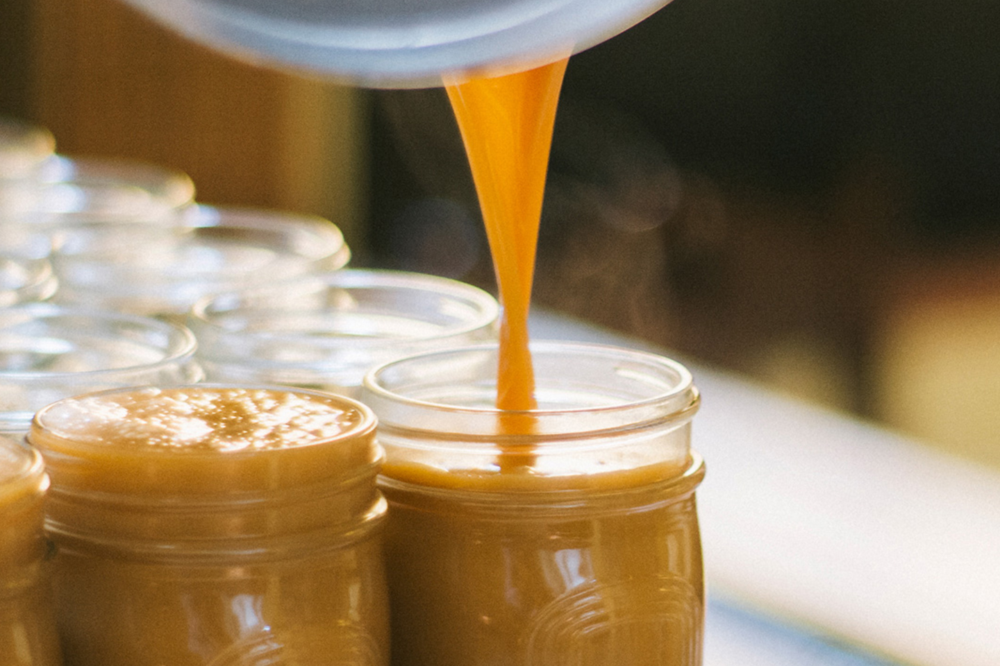

CAJETA DE CELAYA

EN UN CAZO DE COBRE, A FUEGO MUY LENTO, SE BATEN CUIDADOSAMENTE LECHE DE VACA Y DE CABRA CON AZÚCAR, CARBONATO Y VAINILLA, AUNQUE HAY QUIENES LE AGREGAN LICOR O NUECES PICADAS. ASÍ ES COMO SE PREPARA ESTE DULCE TÍPICO, TAL VEZ, EL MÁS FAMOSO DE GUANAJUATO.
SU ELABORACIÓN DATA DE LA ÉPOCA COLONIAL Y SE LE LLAMÓ CAJETA POR LAS CAJAS DE MADERA EN LAS QUE SE EMPACABA PARA SU VENTA.